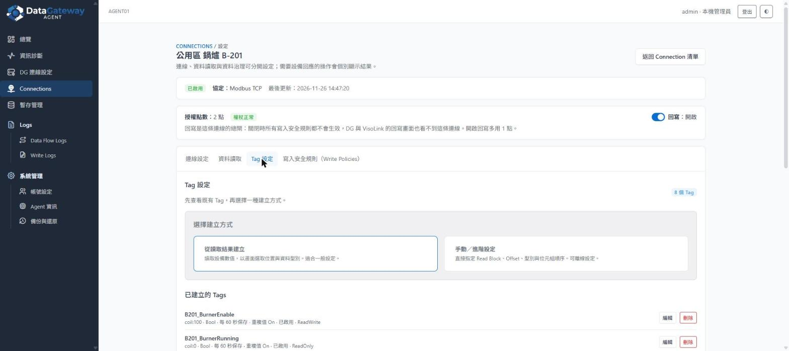

Modbus TCP 連線與 Tag
Modbus TCP 為輪詢式讀取：先定義多久讀一次（Scan Group），再定義讀哪個位置（Read Block），最後從讀取結果建立 Tag。
建立 Modbus TCP 連線

- Host / IP、Port、Unit ID
- 設備位址、連接埠（預設 502）與站號（預設 1）。
- 連線逾時／讀取逾時（ms）、重試次數
- 預設 3000、3000、3 次。
- Byte Order／Word Order
- BigEndian／LittleEndian、HighLow／LowHigh，依設備手冊。
- 填名稱、Host / IP、Port、Unit ID。
- 確認逾時、重試與位元組順序。
- 按「建立 Modbus TCP Connection」。
進入新連線的設定頁，接著設定 Scan Group 與 Read Block。
失敗時先查
- 之後讀不到資料：確認 Agent 能連到設備的 Port，且 Unit ID 正確。
設定讀取週期（Scan Groups）

- 在 Scan Groups 輸入名稱與毫秒數（例如「鍋爐每秒」、1000），勾選「啟用」。
- 按「新增」。
清單出現新的 Scan Group，例如「1000 ms · Enabled」。
失敗時先查
- 讀取週期太短可能讓設備負荷過高，依設備能力設定。
設定讀取位置（Read Blocks）
- Function
- 01 Read Coils、02 Read Discrete Inputs、03 Read Holding Registers、04 Read Input Registers。
- Scan Group
- 這個區塊依哪個讀取週期讀取。
- Start Address（Base 0）／Quantity
- 起始位址（從 0 起算）與數量。
- 填名稱，選 Function 與 Scan Group，輸入 Start Address 與 Quantity，勾選「啟用」。
- 按「新增 Read Block」。
- 設備在線時，按該區塊的「讀取一次」確認讀得到。
清單出現區塊，例如「03 Read Holding Registers · 0–9 · 鍋爐每秒 · Enabled」。
失敗時先查
- 讀取一次失敗：確認位址範圍在設備支援內，以及 Base 0／Base 1 的差異。
從讀取結果建立 Tag

- 選「從讀取結果建立」，選擇 Read Block 與資料型別（例如 Float32 2 registers），按「讀取並預覽」。
- 表格列出每筆原始 Registers、HEX 與解碼值；在正確的那一列按「選取」。
- 右側顯示不同 Byte／Word Order 的解碼結果，可改選正確的組合。
- 填名稱、顯示名稱；可設定 Value Conversion、History interval（保存間隔）與是否保存重複值。
- 按「確認此值並建立 Tag」。
「已建立的 Tags」出現新 Tag，例如「holding:0 · Float32 · 每 60 秒保存」；Coil 會自動存成 Bool。
保存間隔與是否保存重複值跟著 Agent 的點；但要不要保存、怎麼保存，由 DG「歷史保存設定」決定。
失敗時先查
- 解碼值不合理：改選其他 Byte／Word Order，或確認資料型別。
手動／進階設定 Tag
- 選「手動／進階設定」。
- 直接指定 Read Block、Offset、型別與位元組順序；修改既有 Tag 時按該列「編輯」。
- 需要回寫時把 Access Mode 改成 ReadWrite 並選 Write Policy。
- 按「儲存進階 Tag」。
Tag 清單更新。
失敗時先查
- 要刪除 Tag 時按該列「刪除」；DG 上的 Tag 會變成無來源，歷史保留。